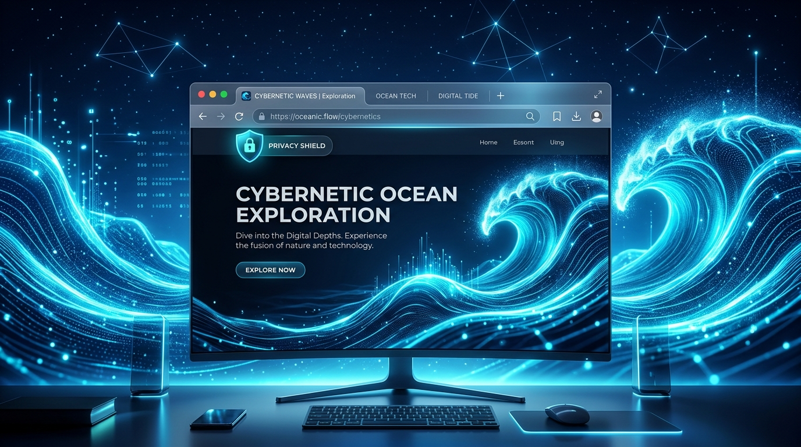

Container Universes
Per-container isolated WKWebsiteDataStore(forIdentifier:) contexts — Personal, Work, Banking — plus ephemeral burner tabs that wipe all state on close.
Qwave is a WebKit-native, post-quantum, battery-optimized macOS browser. Container universes, Brave-style shields, a Mullvad WireGuard VPN with certificate pinning — and a committed egress allowlist you can audit line by line.
Apple Silicon & Intel · open source (MIT) · auto-updates via Sparkle

A thin AppKit shell over ten focused Swift modules. Every capability below is real code with tests — not a roadmap.
Per-container isolated WKWebsiteDataStore(forIdentifier:) contexts — Personal, Work, Banking — plus ephemeral burner tabs that wipe all state on close.
A native WKContentRuleList engine compiled from uBO/EasyList syntax, per-host JavaScript toggles, and an automatic HTTPS-First upgrader.
TabHibernator unloads background WebKit processes while preserving scroll and form state.
responds(to:)-guarded reflection over experimental _WKFeature toggles.
A browser.* bridge with tabs, storage.local, messaging, and popover UIs.
A wave-based cognitive substrate with container-scoped AES-GCM storage and AI-agnostic providers. Stored memories never leave the Mac.
A hand-rolled, prepared-statement store for history, bookmarks, and session restore — measured at 391 allocations per 50k-row query, and held there by a CI gate.
Most "private" browsers ask for trust. Qwave ships a committed allowlist of every host it is allowed to contact on its own behalf. A regression test fails the build if a module tries to reach anything else.
Page traffic is yours; Qwave's own traffic is exactly these three hosts — documented in NETWORK.md.
Read the egress inventory →Qwave's Stage-B tunnel negotiates a pre-shared key with a hybrid KEM: ML-KEM-768 (FIPS 203) combined with Classic McEliece 348864. Break one and the other still stands.
Pure-Swift Keccak/SHAKE, constant-time implicit rejection, negative known-answer tests, and a downgrade path that fails closed rather than falling back to classical-only. The crypto review lives in CRYPTO_REVIEW.md.
Packages/QwaveKit/Package.swift defines it all. No hidden Xcode state.
# Clone and run the full 261-test suite (release mode) git clone https://github.com/8b-is/qwave.git && cd qwave swift test -c release --package-path Packages/QwaveKit # Generate the Xcode project and build (project.yml is the source of truth) xcodegen generate xcodebuild -scheme Qwave -configuration Release build
Signed, notarized, and auto-updating. Free and open source under the MIT license.